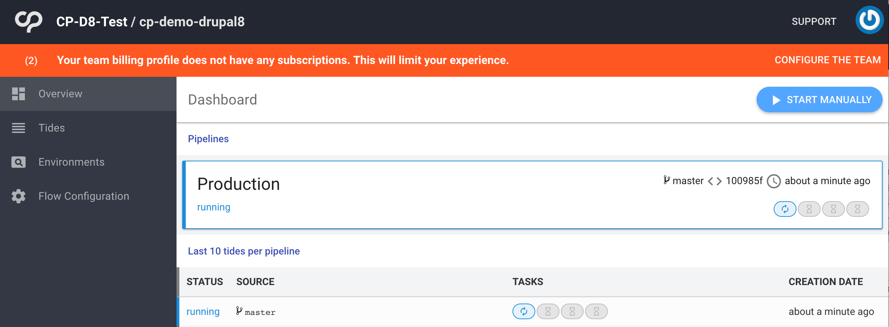

Getting Started with Drupal
Introduction
This is a guide to getting Drupal 8 running on ContinuousPipe with a remote development environment. The code samples used in the guide can be seen at https://github.com/continuouspipe/demo-drupal8.
Prerequisites
Before getting started you will need the following:
- A GitHub or Bitbucket account to host your Drupal project
- A ContinuousPipe account
- A Kubernetes cluster e.g. AWS, GCE or Azure
- A Docker Registry account e.g. docker.io or quay.io
You will also need Git and Composer installed on your local machine to follow these instructions.
Setting Up Drupal 8
Creating a Skeleton Drupal 8 Project
Whilst you can start from scratch and add the necessary configuration later, the quickest way to get started is to download the example project from GitHub and use this as the basis for your project. Download the following repository and unzip:
https://github.com/continuouspipe/demo-drupal8/archive/master.zip
Connecting to the GitHub Repository
Move to the downloaded project directory:
cd demo-drupal8
Create a local git repository:
git init
Commit the initial installation:
git add . && git commit -m "Initial installation of Drupal 8"
Add a GitHub repository as a remote:
git remote add origin git@github.com:continuouspipe/demo-drupal8.git
#replacing the organisation and repository with your repository
Integrating Drupal with ContinuousPipe
Adding Docker Configuration Files
The example project has a Dockerfile included in the project root with the following content:
Dockerfile
FROM quay.io/continuouspipe/drupal8-apache-php7:stable # Add the application COPY . /app WORKDIR /app COPY ./tools/docker/usr/ /usr ARG GITHUB_TOKEN= ARG CODE_OWNER=build ARG CODE_GROUP=build ARG APP_USER=www-data ARG APP_GROUP=www-data RUN container build
The Dockerfile is used to specify how the Docker image is built. It is based on a prebuilt image created specifically for Drupal 8 running on Apache. This is one of several ContinuousPipe images that can be found at https://github.com/continuouspipe/dockerfiles.
The README for the prebuilt image lists the arguments that can be passed when it is initialised, including environment variables. The repository project code is copied onto the image and a script is run which will do things like install the vendors with composer.
The demo project also includes an example docker-compose.yml file in the project root.
docker-compose.yml
version: '2' services: web: build: context: . args: - GITHUB_TOKEN - CODE_OWNER=build - CODE_GROUP=build - APP_USER=www-data - APP_GROUP=www-data links: - database environment: - GITHUB_TOKEN - WEB_HTTP=true - WEB_HTTPS=false - DRUPAL_HASH_SALT=sosecret - DRUPAL_DATABASE_NAME=drupaldb - DRUPAL_DATABASE_USERNAME=drupal - DRUPAL_DATABASE_PASSWORD=drupal - DRUPAL_DATABASE_HOST=database - DRUPAL_DATABASE_PORT=3306 - DEVELOPMENT_MODE=0 - DRUPAL_ADMIN_USERNAME=drupaluser - DRUPAL_ADMIN_PASSWORD=drupalpass expose: - 80 database: image: quay.io/continuouspipe/mysql5.6:v1.0 environment: MYSQL_ROOT_PASSWORD: drupal MYSQL_DATABASE: drupaldb MYSQL_USER: drupal MYSQL_PASSWORD: drupal expose: - 3306
ContinuousPipe uses the docker-compose.yml configuration to know how to build and configure the services that it deploys. Here we deploy the minimum requirements for Drupal 8 - a web service and a database.
Adding ContinuousPipe Configuration File
The demo project contains a continuous-pipe.yml file in the project root with a basic configuration.
continuous-pipe.yml
variables: - name: CP_ENVIRONMENT value: prod tasks: images: build: services: web: image: ${IMAGE_NAME} naming_strategy: sha1 db_deployment: deploy: cluster: ${CLUSTER} environment: name: '"demo-drupal8-" ~ code_reference.branch' services: database: specification: volumes: - type: persistent name: database-volume capacity: 5Gi storage_class: default volume_mounts: - name: database-volume mount_path: /var/lib/mysql command: - /usr/local/bin/docker-entrypoint.sh - mysqld - --ignore-db-dir=lost+found - --max_allowed_packet=128M ports: - 3306 resources: requests: cpu: 50m memory: 250Mi limits: cpu: 500m memory: 2Gi environment_variables: - name: MYSQL_ROOT_PASSWORD value: ${DATABASE_ROOT_PASSWORD} - name: MYSQL_USER value: ${DRUPAL_DATABASE_USERNAME} - name: MYSQL_PASSWORD value: ${DRUPAL_DATABASE_PASSWORD} - name: MYSQL_DATABASE value: ${DRUPAL_DATABASE_NAME} deployment_strategy: readiness_probe: type: tcp port: 3306 web_deployment: deploy: cluster: ${CLUSTER} environment: name: '"demo-drupal8-" ~ code_reference.branch' services: web: specification: accessibility: from_external: true volumes: - type: persistent name: web-public-files-volume capacity: 5Gi storage_class: default volume_mounts: - name: web-public-files-volume mount_path: /app/docroot/sites/default/files environment_variables: &default_web_variables - name: DRUPAL_DATABASE_NAME value: ${DRUPAL_DATABASE_NAME} - name: DRUPAL_DATABASE_USERNAME value: ${DRUPAL_DATABASE_USERNAME} - name: DRUPAL_DATABASE_PASSWORD value: ${DRUPAL_DATABASE_PASSWORD} - name: DRUPAL_DATABASE_PREFIX value: ${DRUPAL_DATABASE_PREFIX} - name: DRUPAL_DATABASE_HOST value: ${DRUPAL_DATABASE_HOST} - name: DRUPAL_DATABASE_PORT value: ${DRUPAL_DATABASE_PORT} - name: CP_ENVIRONMENT value: ${CP_ENVIRONMENT} - name: INSTALL_DRUPAL value: ${INSTALL_DRUPAL} - name: DRUPAL_ADMIN_USERNAME value: ${DRUPAL_ADMIN_USERNAME} - name: DRUPAL_ADMIN_PASSWORD value: ${DRUPAL_ADMIN_PASSWORD} - name: DEVELOPMENT_MODE value: ${DEVELOPMENT_MODE} ports: - 80 resources: requests: cpu: 50m memory: 500Mi limits: cpu: 1 memory: 2G drupal_demo_install: run: cluster: ${CLUSTER} environment: name: '"demo-drupal8-" ~ code_reference.branch' image: from_service: web commands: - container drupal_install environment_variables: *default_web_variables pipelines: - name: Remote development condition: code_reference.branch matches "/^cpdev/" tasks: &default_tasks - images - db_deployment - drupal_demo_install - web_deployment variables: - name: CP_ENVIRONMENT value: dev - name: Production condition: 'not(code_reference.branch matches "/^cpdev/")' tasks: *default_tasks
This defines four tasks for ContinuousPipe.
imagesbuilds a Docker image for the web service based on the matching configuration for the web service in thedocker-compose.ymlfile. The built image will include the repository contents in the commit that triggered the build (because of the instructions in theDockerfilein the previous step). Once the image is built ContinuousPipe will push it to an image registry configured using theIMAGE_NAMEvariable (setting this variable is explained later).db_deploymentdeploys the database services to a cluster set with theCLUSTERvariable (setting this variable is explained later). The environment name used to refer to the deployment is made consistent by combiningdemo-drupal8-with the name of the branch that triggered the process.web_deploymentdeploys the web container running apache.drupal_demo_install- runs the intial Drupal installation.
The ContinousPipe documentation has more information about tasks.
Configuring the ContinuousPipe Console
Before we can push any code to our repository, we need to ensure that the ContinuousPipe console is properly configured. Please refer to the ContinuousPipe Quick Start guide to setup your project, cluster, registry and create your first flow.
Adding Variables to the ContinuousPipe Console
When creating the continuous-pipe.yml above an IMAGE_NAME and CLUSTER variable were used. These can now be added in the configuration section of the new flow within the ContinuousPipe console. This is explained in configuring a flow.
The CLUSTER value you need can be found in the “Clusters” tab of the project. If you manually entered the Kubernetes cluster details you will have set the value yourself. If you used a Google linked account the value will have been set when setting up the Google Container Engine.
The IMAGE_NAME value is the path where the Docker image should be pushed to. This needs to be the full name, including the Docker repo and account e.g. docker.io/continuouspipe/demo-drupal8. If you don’t yet have a Docker repo nor do you know how to create one, please refer to the Docker Hub repositories documentation.
Note
The variables can also have their values provided in the continuous-pipe.yml file as is done below for the symfony environment. Keeping them out of the file and in the ContinuousPipe console allows you to keep them out of your code repository.
Initiating a Tide
Commit any changes if not already done and push them to your code repository. You should be able to see that a tide was triggered on the overview or tides pages for the flow on https://your-ui.example.com.

Clicking on the status will show more details of the build progressing. Some steps, particularly building the image and pushing it to the registry, may take a while to complete. Once it has completed running successfully you can view the environment and from there open the web service and see the running application. The default Drupal page should be visible.
Remote Development with ContinuousPipe
Install the Client
To use ContinuousPipe as a remote development environment you will need the cp-remote client, which is available on OSX, Linux and Windows. Please refer to the remote development installation instructions for each of the platforms.
Run Setup
cp-remote setup
You will now be asked a series of questions that relate to how you have configured ContinuousPipe and your cluster details. Please refer to the remote development setup instructions for more information.
Build the Remote Environment
To create the remote development environment run:
cp-remote build
This will force push the current commit you have checked out as the remote environment branch. So assuming you are still on the master branch and at the commit that successfully created an environment, this will be used to create your initial remote environment. You can rerun the cp-remote build command to rebuild the remote environment with whatever you have checked out at that point as needed. However, you should not need to do this frequently if you use cp-remote watch to sync changes to your remote environment as you make them (explained below).
Development Mode
The default configuration described above has two build pipelines defined.
This adds two different pipelines which use conditions to determine which pipeline is used. In this case it checks if the branch starts with cpdev - if it does then the Remote pipeline is used, if not the Production pipeline is used. You could use this to run different tasks but here the same tasks are run but variables have different values set. The YAML variable being used is named CP_ENVIRONMENT which is declared and initialised to “prod” at the top of the file. It stays as “prod” for the Production pipeline but is set to “dev” for remote environments.
Rebuild the Remote Environment
To rebuild the remote environment with these changes, commit them to master and run cp-remote build - this will establish the Production pipeline. You can now switch to a branch prefixed with cpdev and run cp-remote build again to establish the Remote pipeline. You will then see the two new pipelines on the overview page in the ContinuousPipe console.
Start Development
To start development run:
cp-remote watch
You can now make changes and they will be synced to the remote environment where you should be able to see the result.
Configuration Management in Drupal 8
The main workflow adjustment you will have to make for Drupal 8 remote development is using cp-watch to sync your changes. For example, if you want to make a change to configuration, take the following steps:
- Make the change in the UI of the remote environment.
- Export as a feature or using Configuration Export
cp-remote fetchwill rsync the files from the container back to your local machine- Commit the changes in Git
If you are doing custom development, any change you make will immediately be on the container as soon as you save via cp-watch (including deletion).
Drush and Drupal Console
Drush and Drupal Console are both available in this demonstration setup. To use them:
cp-remote bash
You will then have a bash shell open on the web container.